Thử nghiệm dùng IT và AI để học Truyện Kiều của Đại thi hào Nguyễn Du
(Tháng 9 năm 2023)
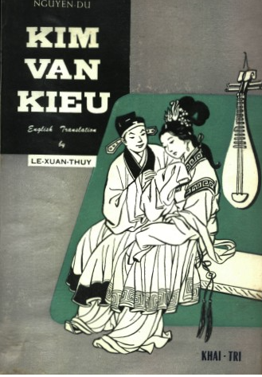
Tác giả của 'Truyện Kiều' đã dạy tôi cách vẽ tranh bằng trí tuệ nhân tạo (AI) như thế nào?

Cited:
https://lau.marketing/ve-ai/
Nhà thơ vĩ đại Nguyễn Du, tác giả của 'Truyện Kiều', chính là người đã hướng dẫn tôi về cách điều khiển trí tuệ nhân tạo. Khi tôi nói điều này, hầu như ai cũng hoài nghi. Và tất cả mọi người muốn biết, cuộc gặp gỡ kỳ lạ giữa nhà thơ thế kỷ 18 và công nghệ trí tuệ nhân tạo thế kỷ 21 thực sự diễn ra như thế nào?
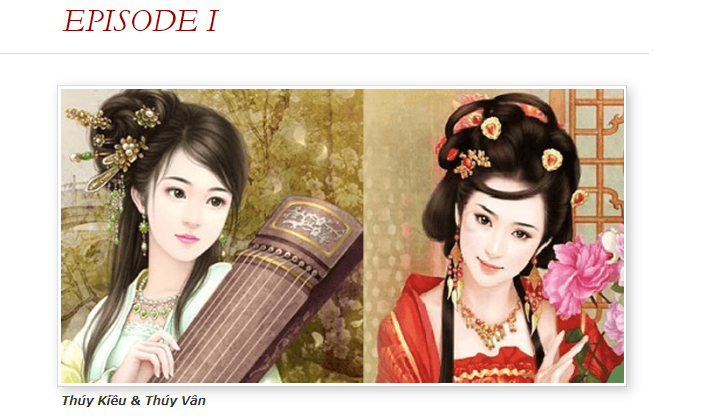
Cited:
https://truyenkieuinenglish.wordpress.com/episode-v/
Prompt: Hai chị em Đông Á, đều có thân hình hoa mai và thần tuyết, phong cách độc đáo và vẻ đẹp hoàn hảo, em gái với khuôn mặt trăng tròn, lông mày hai vòng cung dài, nụ cười như hoa, giọng nói như ngọc, chị gái càng thêm hấp dẫn và quyến rũ, vượt qua cô em về tài năng và sắc đẹp.
Cited:
Tri Vo
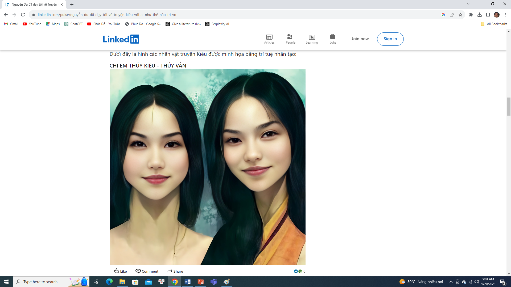
Prompt: một người đàn ông Đông Á sống vào thời nhà Minh, được miêu tả là một người đàn ông cao lớn, có râu sư tử, hàm chim én và lông mày tằm, có bờ vai to và thân hình đồ sộ, là một vị tướng dũng cảm, hích lối sống mạo hiểm, mạo hiểm. vô song về võ thuật và kỹ năng chiến tranh.
Cited:
https://lau.marketing/ve-ai/
Phát triển nhân vật bằng AI
Prompt: Phát triển một nhân vật nam thuộc Đông Á sống trong triều đại Minh, được mô tả như một người đàn ông cao to với râu sư tử, cái cằm giống sẻ và lông mày giống sâu tơ, với bờ vai rộng và thân hình mạnh mẽ, một tướng quân gan dạ yêu cuộc sống phiêu lưu, không ai sánh bằng trong võ thuật và kỹ năng chiến trận.
ChatGPT
Nhân vật: Tướng Lí Vĩ Thăng
Quá trình phát triển: Tướng Lí Vĩ Thăng là một bóng hình nổi bật trong triều đại Minh, nổi tiếng khắp đế quốc với sự hiện diện ấn tượng và khả năng võ thuật mạnh mẽ đáng kinh ngạc. Sinh ra trong một gia đình của những người lính, ông đã định mệnh trở thành một nhân vật huyền thoại trong lịch sử Trung Quốc. Lớn lên tại thành phố đông đúc Nanjing, Lí Vĩ Thăng đã thể hiện khả năng vượt trội về thể chất từ khi còn nhỏ. Đứng cao 1m95, ông là một khổng lồ trong số đồng thời đại, với râu dài giống như bờ sông và lông mày giống như sâu tơ, tạo nên vẻ cuốn hút cho đôi mắt sắc sảo của mình. Đường cằm của ông giống như của loài sẻ, sắc nét và chắc chắn, tượng trưng cho cam kết kiên định của ông với đất nước.
Vẻ ngoại hình: Tướng Lí là một hình tượng đáng chú ý, với bộ giáp phức tạp theo kiểu định kỳ của triều đại Minh trang trí trên người. Bờ vai rộng và ấn tượng, tạo nên sự hiện diện quyết định hơn nữa trên chiến trường. Những bước chân của ông chắc chắn và nặng nề, và giọng điệu của ông, mặc dù trầm ấm, nổi tiếng với giọng điệu dịu dàng và quyền lực.
Tính cách: Lí Vĩ Thăng sở hữu một tinh thần mạo hiểm và phiêu lưu, luôn tìm kiếm cảm giác của trận chiến và cuộc phiêu lưu. Ông không chịu khuất phục trong sự trung thành với triều đại Minh và tự hào về việc bảo vệ đất nước. Mặc dù có vẻ ngoại hình ấn tượng, Tướng Lí nổi tiếng với tính hài hước và tinh thần đoàn kết với binh sĩ của mình. Ông tin vào lãnh đạo bằng ví dụ và thường được tìm thấy ở hàng đầu của trận chiến, đối mặt không sợ hãi vào mê cung của cuộc đánh nhau bên cạnh binh sĩ của mình.
Kỹ năng và thành tựu: Tướng Lí Vĩ Thăng không ai sánh bằng trong nghệ thuật chiến đấu và chiến thuật. Sự thành thạo của ông trong các môn võ thuật khác nhau, bao gồm võ kung fu và bắn cung, đã biến ông thành đối thủ đáng gờm trên chiến trường. Ông nổi tiếng với trí tuệ chiến lược và đã đóng một vai trò quan trọng trong một số chiến thắng quyết định cho triều đại Minh.
Tướng Lí là một anh hùng của nhân dân, được tôn vinh vì việc bảo vệ Tường Lớn khỏi những kẻ xâm lược người Mông và tận tụy trong việc bảo vệ tính toàn vẹn của triều đại Minh. Những hành động huyền thoại của ông được ghi chép trong những bài thơ và bài hát kịch tính, và tên tuổi của ông trở nên đồng nghĩa với dũng khí và danh dự.
Di sản: Ngay cả sau khi ông qua đời, di sản của Tướng Lí Vĩ Thăng vẫn sống đọng trong lòng nhân dân Trung Quốc. Đền thờ và tượng đài được xây dựng để tôn vinh ông, và câu chuyện về cuộc đời ông tiếp tục truyền cảm hứng cho nhiều thế hệ người lính và lãnh đạo. Râu dài giống sư tử, cằm giống sẻ và lông mày giống sâu tơ của ông trở thành biểu tượng của sức mạnh, lòng dũng cảm và sự kiên định trước khó khăn, đảm bảo rằng tên tuổi của ông sẽ được ghi nhớ trong hàng thế kỷ. (Source: ChatGPT)
Thử nghiệm giải thích từng câu của truyện Kiều bằng chatGPT
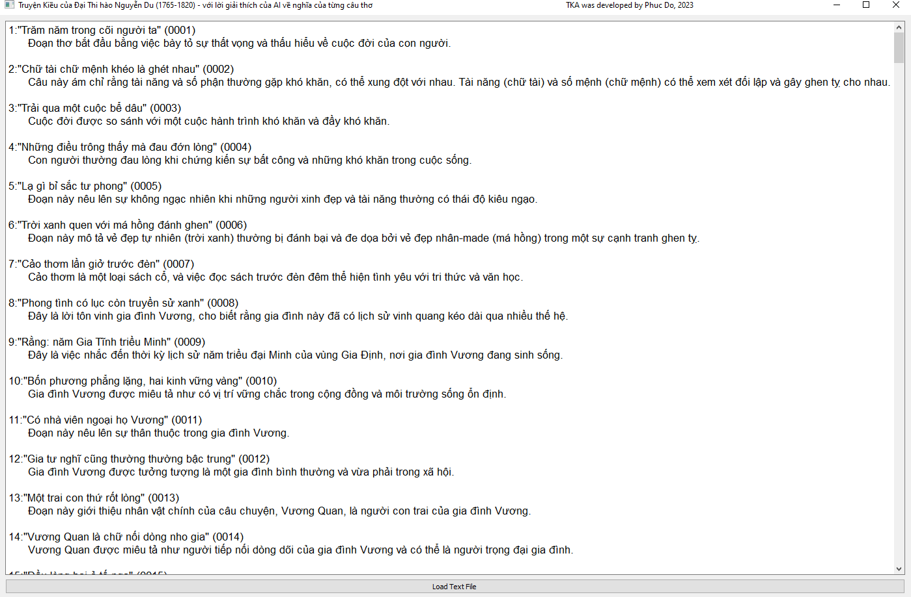
Trích dẫn truyện Kiều (2022)
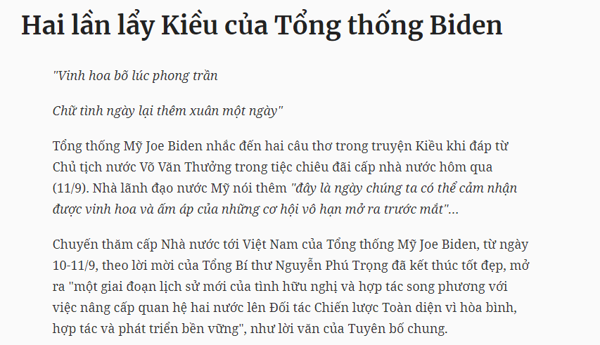
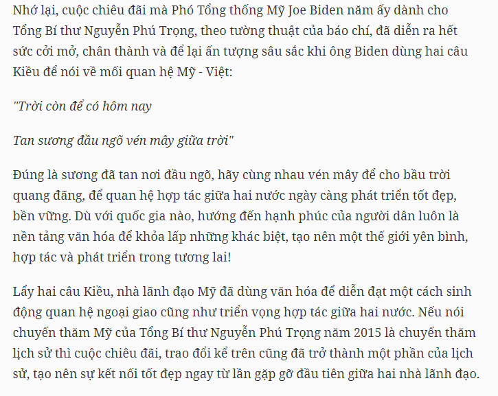
(Source: vnexpress.net)
Thử nghiệm khả năng giải thích nghĩa của ChatGPT (GPT 3.5)
Giải thích nghĩa 2 câu thơ sau của Nguyễn Du:
Trời còn để có hôm nay
Tan sương đầu ngõ vén mây giữa trời
ChatGPT
Câu thơ trên là của Nguyễn Du, một trong những nhà thơ nổi tiếng của văn học Việt Nam. Để hiểu nghĩa của hai câu thơ này, chúng ta cần xem xét bản ngữ và ngữ cảnh của chúng:
"Trời còn để có hôm nay":
Bản ngữ: Câu này nói về sự tồn tại của "hôm nay" được kết nối với trời.
Nghĩa: Câu thơ này thường được hiểu là tôn vinh và trân trọng thời gian hiện tại, nhấn mạnh rằng cuộc sống chỉ có mặt ở thời điểm này và chúng ta nên quý trọng những gì chúng ta có trong hiện tại. Trời ở đây có thể tượng trưng cho sự tồn tại và cuộc sống.
"Tan sương đẩu ngõ vén mây giữa trời":
Bản ngữ: Câu này mô tả việc sương sớm tan chảy và mây được vén lên ở giữa bầu trời.
Nghĩa: Câu thơ này thường được hiểu như một biểu tượng của sự tươi mới và sự trở lại sau những thời kỳ u ám và khó khăn. Sương sớm tan đi và mây được kéo lên như một hình ảnh của sự sáng sủa, hy vọng, và sự thay đổi tích cực. Đây có thể là một thông điệp về hy vọng trong cuộc đời, vượt qua khó khăn và bước vào một giai đoạn mới.
Tóm lại, hai câu thơ này thường được hiểu là kêu gọi quý trọng thời gian hiện tại và thể hiện sự hi vọng và sự sáng sủa sau những khó khăn trong cuộc đời.
Chức năng hỗ trợ trích câu thơ trong truyện Kiều
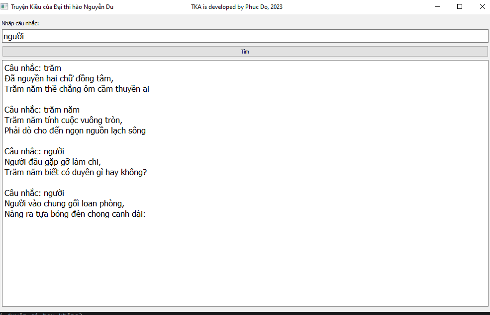
Chức năng hỗ trợ phân tích cảm xúc và phân loại chủ đề các câu thơ (2020)
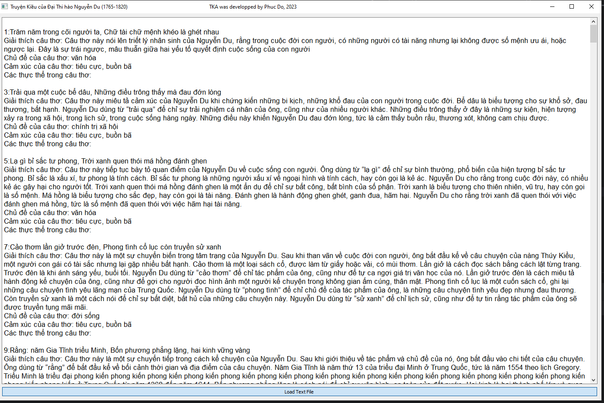
Chức năng biểu diễn trực quan sự xuất hiện các từ (2017)
Chức năng phân tích sự tương đồng ngữ nghĩa giữa các câu thơ
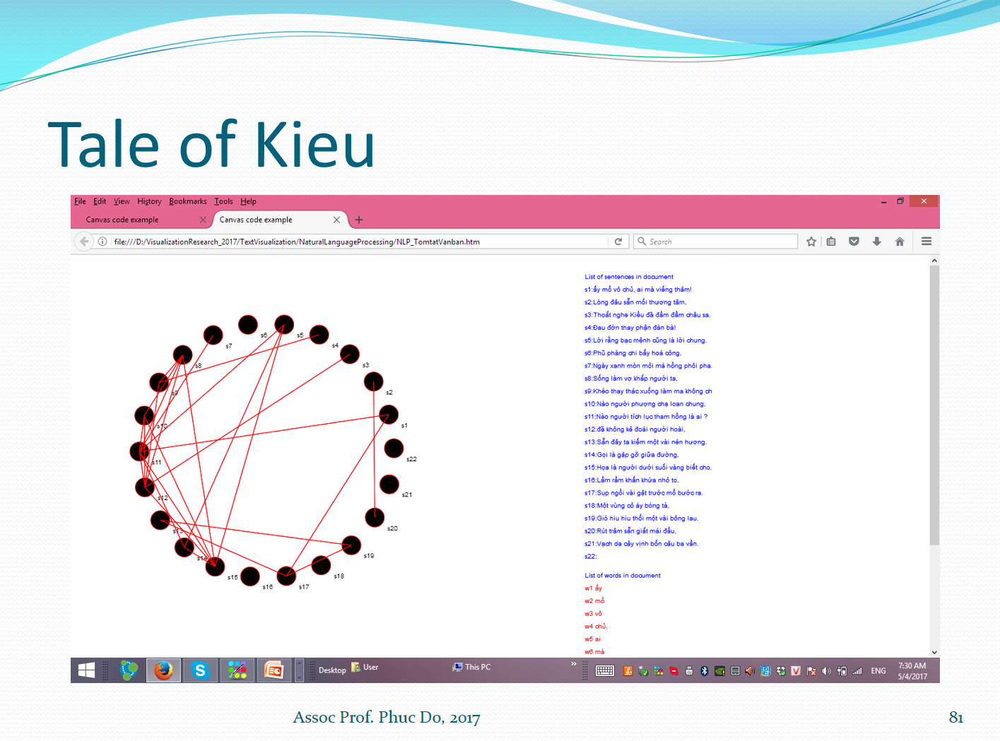
Trích các từ đồng vần điệu trong câu 6 và câu 8 (thơ lục bát)
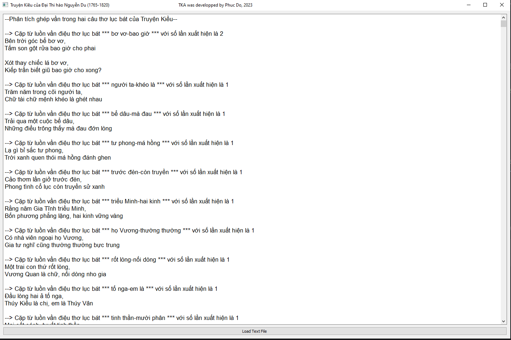
Chức năng giải thích câu thơ theo tác giả Ngô Minh Trực (2019)
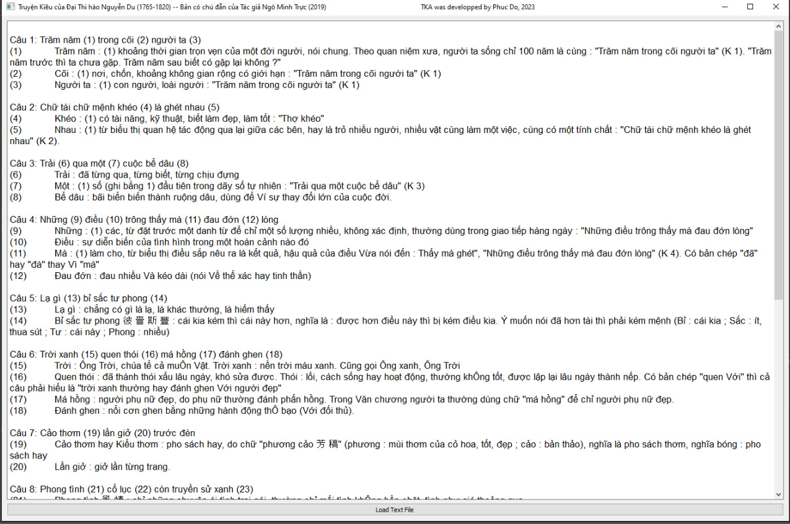
Chức năng tìm câu thơ trong truyện Kiều
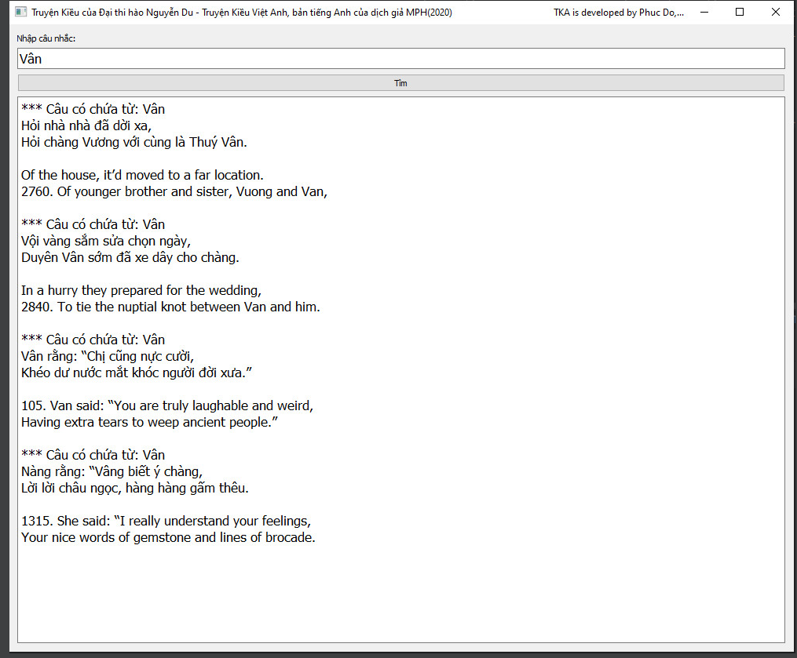
Từ điển các từ được dùng trong truyện Kiều
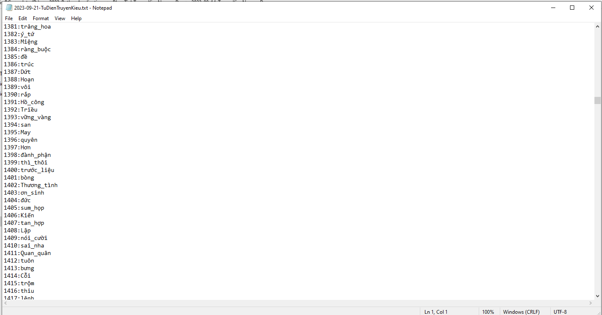
Chức năng biểu diễn trực quan phân bố từ trong không gian nhúng Word2vec, qua đó biết được các từ sử dụng cùng nhau
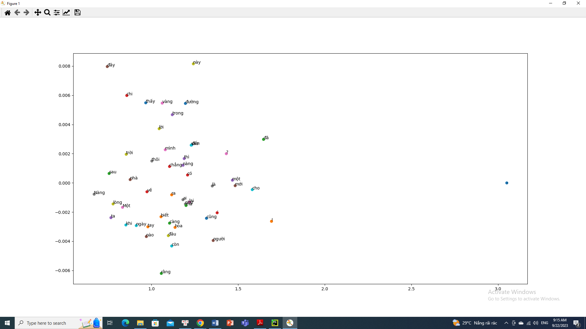
Chức năng phân tích sự đồng hiện giữa các từ (2017)
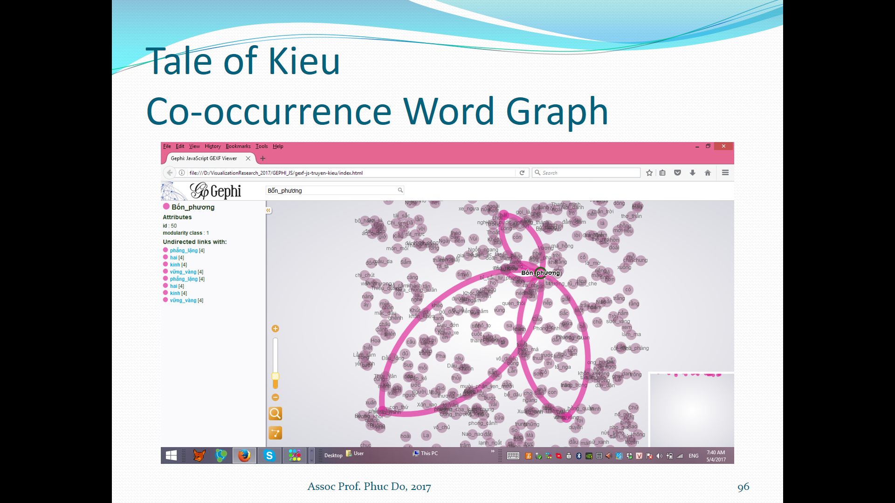
Chức năng học vần điệu trong thơ lục bát
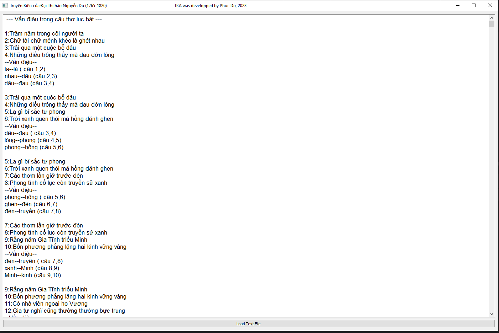